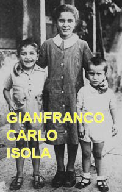
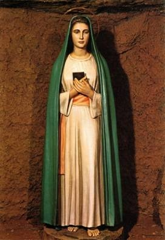
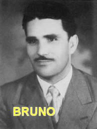

= “JESUS ESPEROU
NO PORTÃO” =
A FAMÍLIA FOI PASSEAR
Num bonito sábado dia 12 de
Abril de 1947, saí para passear com meus filhos: Gianfranco de 4 anos de idade,
Carlo com 7 anos e Isola uma menina com 10 
- "Gianfranco, Carlo e Isola, vocês podem jogar bola, mas não vão longe demais"
Como todas as crianças, eles saíram imediatamente correndo no meio das plantas e chutando a bola para todos os lados, com gritos de alegria e muito prazer, enquanto arranjei um local adequado para me sentar numa elevação no bosque de eucaliptos, e comecei a escrever preparando um texto para uma apresentação que ia fazer contra a SANTÍSSIMA VIRGEM MARIA. Para me ajudar naquele objetivo, eu levei uma Bíblia Protestante e folhas de papel branco, onde comecei logo escrevendo as minhas idéias: "Nossa Senhora não é virgem, não é imaculada e não é assumida ao céu..." Todavia, mal comecei a escrever, as crianças me chamaram:
-"Pai, perdemos a bola; venha procurá-la conosco"!
Levantei-me e fui naturalmente ao encontro dos meus filhos, e logo vi o Carlo muito preocupado, procurando a bola pela área dos eucaliptos. A menina Isola não quis saber de bola e ficou colhendo flores. O Gianfranco sem a bola, logo se conformou, ficou sentado num barranco próximo a um eucalipto, e não reclamou a falta da bola, pois desfolhava um jornal.
Assim, eu e o Carlo descemos a encosta do morro em direção à Laurentina, procurando exaustivamente encontrar a bola no meio da vegetação, mas não a encontramos. Preocupado com as duas crianças que ficaram na parte de cima, e querendo ter a certeza de que o mais novo não se afastara do local que lhe designei, chamei-o pelo nome e ele respondeu. Então fiquei mais tranquilo e continuei na busca da bola com o Carlo. Passados mais alguns momentos, enquanto procurava a bola gritei novamente para Gianfranco. Mas agora, não ouvi nenhuma resposta dele, não ouvi a voz do meu filho! E isso, apesar de eu ter levantado a voz, não ouvi nenhum retorno dele! Preocupado subi rapidamente o morro na companhia do Carlo e fomos direto para os arbustos próximo da caverna, aonde eu o havia deixado. Mas ele não estava ali... Então gritei mais alto: “Gianfranco onde está você”?
Em vão, o silêncio continuou, não ouvi nenhuma resposta.
Nervoso e preocupado,
freneticamente fui à procura do filho entre os arbustos e as rochas e,
finalmente, encontrei o menino! Ele estava ajoelhado na

-"Bela Dama! Bela Dama”!
-"O que você está dizendo Gianfranco?” Perguntei –“O que você está fazendo”?
Ele não respondeu e nem olhou para mim. Pensei que fosse um jogo de crianças, pois ninguém em nossa casa lhe havia ensinado a rezar e inclusive a se manter naquela atitude de oração, pois ele não era nem batizado! Então chamei a minha filha Isola que estava próximo:
- "Isola, vem aqui e me explique o que está acontecendo”!-Ela obedeceu e veio.
"O que tem lá dentro? Você vê alguma coisa”?
- "Sim papai. Vejo".
- Mas, ao mesmo tempo em que falou, ela também caiu de joelhos à direita de seu irmãozinho Gianfranco. As flores caíram das suas mãos, enquanto o seu olhar se fixou dentro da caverna, também mantendo um simpático sorriso na face, e sussurrando:
- "Bela Dama! Bela Dama”!
Minha admiração era grande demais, pois estava vendo ali os meus filhos ajoelhados em êxtase, num estado de prostração com grande alegria, vendo uma visão dentro da caverna que eu não via e nem sabia do que se tratava! Eles ali de joelhos, verdadeiramente me davam a impressão de que estavam encantados com algo que eu não via, e sempre repetiam as mesmas palavras. Olhei para os lados e decidi chamar Carlo, que ainda estava procurando a bola.
- "Carlo, Carlo, venha aqui rápido.- Explique para mim o que seus irmãos estão fazendo nessa posição curiosa! Você preparou este jogo com eles”?
- "Papai o que o senhor está dizendo? Não sei de que estás falando...
O menino mal terminara de falar
essas palavras, também ele caiu de joelhos à direita de Isola, com as mãos
entrelaçadas e os olhos fixos em um ponto que 
- "Bela Dama! Bela Dama”!
- "É demais”!
- Eu gritei –“Vocês meus filhos estão tirando sarro com o seu próprio pai”?
Não estava suportando mais aquela situação, pois olhava e não via nada, e meus filhos encantados com algo oculto? Como pode ser isso? Então resolvi a agir:
- "Carlo saia daí”.
E como ele não se mexia, tentei levantá-lo a força; mas não consegui. Parecia que ele estava chumbado no chão. Então tive medo. Aproximei-me da menininha e delicadamente falei:
- "Isola levante-se filha e venha com o seu pai, não faça como Carlo”!
Ela também não respondeu. Tentei levantá-la, mas também não consegui. Fui invadido pelo terror, e observando as pupilas dilatadas das crianças em êxtase e a palidez de seus rostos, fiquei apavorado, abracei os jovens e supliquei:
- "Levantem-se, por favor, o que há com vocês? O que acontece aqui? Será que existem bruxas ou demônios na caverna”?
Então instintivamente reagi e falei zangado:
- "Quem está aí? Quem é você? Se você é um sacerdote, saia logo”!